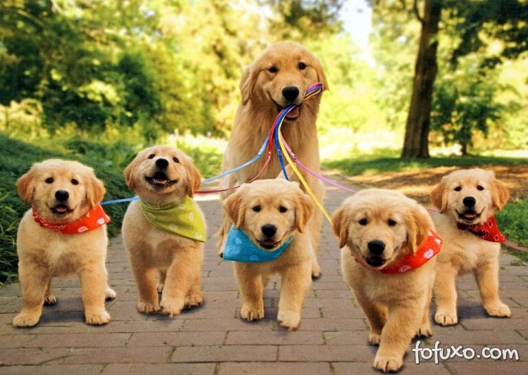
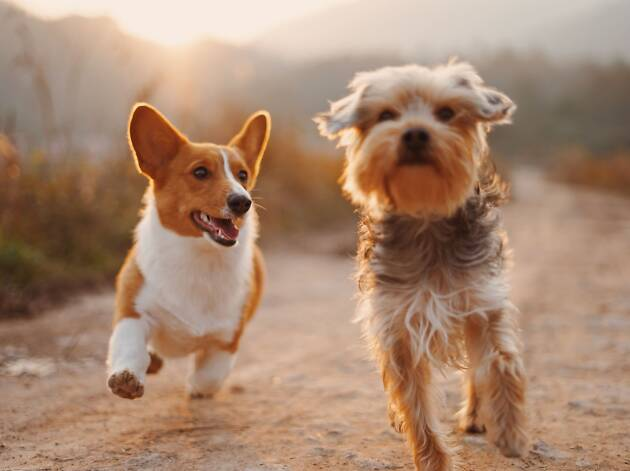

À medida que os cachorros crescem rapidamente e os respetivos sistemas digestivo e imunitário se desenvolvem lentamente, têm necessidades nutricionais muito específicas que são diferentes das dos cães adultos.
Oferecer ao seu cachorro uma alimentação nutricionalmente completa, adaptada às suas necessidades específicas, é essencial para promover o seu desenvolvimento e criar alicerces para um futuro saudável.

Os cachorros passam por um intenso crescimento e desenvolvimento.
A alimentação deles desempenha um papel fundamental na promoção do crescimento e é crucial para o impacto na força e saúde que o seu cachorro terá enquanto adulto.
As necessidades alimentares de um cachorro mudam em cada fase à medida que avançam para a vida adulta, etapa alcançada em diferentes idades para cada raça.
Para garantir que o seu cachorro é devidamente fortalecido ao longo do crescimento, deve permanecer numa alimentação específica para cachorros até atingir a idade adulta.